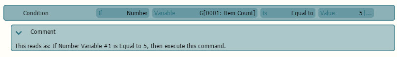
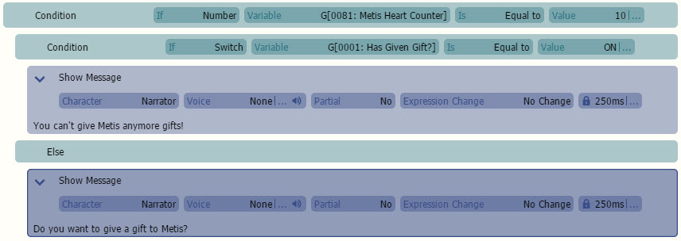
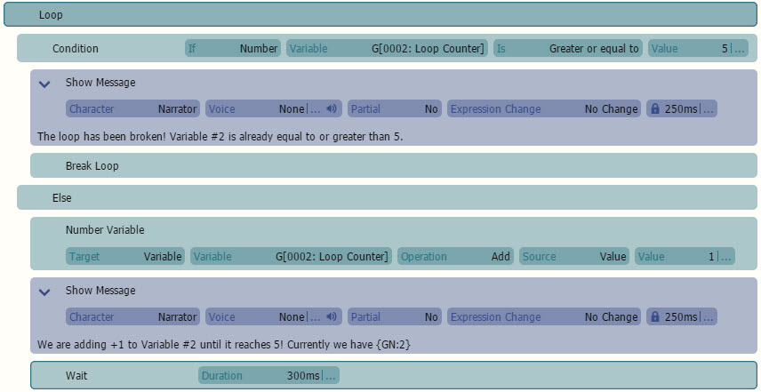

HTML
基础基础命令
础命令是确保你能灵活创造游戏的必备技术.
等待 暂停场景处理。 但是并不包括正在并行运行的全局事件(events)。(译者：按照我的理解，应该是说文件读写，垃圾回收这些核心事件不受影响)
- 在下一个命令执行前的停止时间。 默认情况下， 等待时间单位为毫秒。 (1 秒 = 1000 毫秒)
等待 输入一直等待，直到按键按下或者释放。
按键 -等待的按键。
是- 所等待按键的状态。
- 按下- 按键按下。
- 按键抬起
注释注释(Comment)是用来让用户在代码里面标记用的。注释在游戏实际运行时不会执行，可以放心使用。 注意:
注意:
) 键禁用命令，只要它们不属于需要子命令缩进的命令（例如：条件）。
开关开关(switch) 是用来记录ON/OFF值的。(译者：其实就是boolean类型)。 开关可以有一个或多个。一共有三种作用域： Local, Global and Persistent.
目标- 有两种类型，开关或范围。
开关是针对单个开关。范围是从开关 X
到开关索引 Y。
作用域- 开关的作用范围(有效范围)。
本地代表只在本场景有效。
全局代表在任意场景有效。
持久代表它会的数据将会独立于保存的游戏，(译者：应该是指就算开新档，这个开关还是会起效)。 如果开关设置为范围时，此功能不可用。
值- 这些功能用于指定将对开关执行哪种计算。
关闭- 关闭开关。
打开- 打开开关。
- 如果开关为打开状态，那么切换到关闭。反之亦然。
数值变量数值变量是来存储数值的。它可以是一个变量，也可以是多个。 它也是三种类型： Local, Global and Persistent.
目标- 要修改的目标。有三个目标。
变量是修改单个变量范围是修改从 变量索引 X
到变量 索引 Y 的变量。
引用也被叫做指针。 它将使用选定变量中设置的变量值作为要设置/获取的实际变量的 ID。
作用域- 变量的可视性/位置/作用域。
本地意味着它仅对该 场景有效。
全局意味着它可以在任何 场景中使用。
持久意味着它将 持有独立于存档的数据。如果目标设置为范围，则此项不可用。
操作- 这些选项用于指定将对变量执行何种计算。
设置- 将数值赋给 选定的变量。
添加- 向 选定的变量添加数值。
减去- 从 选定的变量中减去数值。
乘- 将数值乘以 选定的变量。
除- 将数值除以 选定的变量。
模- 赋给预运算变量值除以操作数的余数。
源- 用于操作的源值。
值- 常量数值 或变量。
随机- 从 X 到 Y 的随机值。
引用- 也称为指针。
它将使用选定变量中设置的变量值作为要设置/获取的实际变量的 ID。有关更多信息，您可以阅读我们的
技巧 和窍门。
要将变量用于值，请按 [...] 按钮。小数变量小数变量与 数值变量相同。它用于存储数值。它可以是单个变量，也可以是多个变量。有三种作用域：Local, Global 和 Persistent。它不是一个额外的变量类型。数值变量和Decimal Variable 命令操作的是
相同的数值变量。与数值变量命令唯一不同的是，该命令 允许你控制结果的四舍五入方式，并且还允许你输入小数/浮点数。默认情况下，结果不进行四舍五入。使用
数值变量命令，除法的结果总是向下取整，而且你不能输入小数/浮点数值。简而言之：Decimal Variable 命令 允许你处理小数/浮点数。如果可能，推荐使用
数值变量命令。
目标- 要修改的目标。有三个目标。
变量是修改单个变量范围是修改从 变量索引 X
到变量 索引 Y 的变量。
引用也称为指针。 它将使用选定变量中设置的变量值作为要设置/获取的实际变量的 ID。
作用域- 变量的可视性/位置/作用域。
本地意味着它仅对该 场景有效。
全局意味着它可以在任何 场景中使用。
持久意味着它将 持有独立于存档的数据。如果目标设置为范围，则此项不可用。
操作- 这些选项用于指定将对变量执行何种计算。
设置- 将数值赋给 选定的变量。
添加- 向 选定的变量添加数值。
减去- 从 选定的变量中减去数值。
乘- 将数值乘以 选定的变量。
除- 将数值除以 选定的变量。
模- 赋给预运算变量值除以操作数的余数。
源- 用于操作的源值。
值- 常量数值 或变量。
随机- 从 X 到 Y 的随机值。
引用- 也称为指针。 它将使用选定变量中设置的变量值作为要设置/获取的实际变量的 ID。
四舍五入- 确定结果是否以及如何四舍五入。
否- 结果不进行四舍五入。
商业四舍五入- 结果按商业惯例四舍五入。
向上取整- 结果向上取整。
向下取整- 结果向下取整。
要将变量用于值，请按 [...] 按钮。
文本 变量文本变量用于存储 文本。它可以是单个变量，也可以是多个变量。有三种作用域：Local, Global 和 Persistent。
目标- 有两个目标：文本或范围。
文本是修改单个变量范围是修改变量从变量索引 X
到变量索引 Y。
文本 或 作用域表示仅对该场景有效。
全局表示可以在任何场景中使用。
持久化表示它将独立于游戏存档保存数据。如果目标设置为“范围”，则此选项不可用。
操作- 这些选项用于指定将对变量执行哪种类型的计算。
设置- 将文本值分配给选定的变量。
追加- 将文本值追加到选定的变量。
转为大写- 将选定变量中的所有文本转换为大写（例如，VARIABLE）。
转为小写- 将选定变量中的所有文本转换为小写（例如，variable）。
注意：要将变量用于值，请按 [...] 按钮。
重置局部、全局和持久化变量。如果您使用自定义事件/场景基于的游戏内 UI，并希望像用户开始新游戏一样重置所有变量，这将非常有用。或者，如果您有一个谜题/迷你游戏场景，并希望重置该场景的所有局部变量以重新启动它。
范围- 要重置的变量范围。仅影响该范围内的变量。
局部- 仅影响指定场景的局部变量。
所有局部变量- 影响所有场景/通用事件的所有局部变量。
全局变量- 影响所有全局变量。
持久化- 影响所有持久化变量。（您无需在之后调用“保存持久化数据”命令）
场景- 要为其重置所有局部变量的场景。仅当局部被选为范围时。
类型- 要重置的变量种类
所有- 重置所有类型的变量
开关- 重置所有开关。
数字- 重置所有数字。
文本- 重置所有文本。
列表- 重置所有列表。
目标- 确定是否仅影响指定的变量 ID 范围。
所有- 影响所有变量
范围- 仅影响指定的变量范围。
标签是一个标记，其名称由用户设置，场景可以跳转到该标记。这通常用于在单个场景中调用不同的结果。
跳转到标签是跳转到您设置的标签/标记以继续场景进程。
此命令允许用户设置满足的条件以执行命令。
命令必须设置在条件命令下方，并像这样缩进：

如果- 设置一个变量类型以供条件检查以执行。
数字用于检查数字变量。
开关用于检查开关。
文本用于检查文本变量。
变量- 条件将检查的变量。
是- 这检查“如果变量”和“值”是否在某个特定值。
等于 (=)表示“如果变量”和“值”变量包含相同的内容。
不等于(!=) 表示只要“如果变量”和“值”不包含相同的内容，条件就不会触发。
大于 (>)表示只要“如果变量”大于“值”，就会触发条件。
大于或等于 (>=)表示只要“如果变量”大于或等于“值”的内容，条件就会触发。
小于 (<)表示只要“如果变量”小于“值”，就会触发条件。
小于或等于 (>=)表示只要“如果变量”小于或等于“值”的内容，条件就会触发。
值- 条件触发的触发器。
注意：要将变量用于值，请按 [...] 按钮。
如果您想在条件下列出命令，可以通过多种方式实现：
如果
选中“条件”命令，然后按新命令，它将自动在其下方添加并缩进。
如果您将命令拖到条件下方，它将显示为缩进。 您可以按右箭头（
您可以按右箭头（
）键将命令置于条件下方。 要从条件中移除命令而不删除命令，只需按左箭头（
要从条件中移除命令而不删除命令，只需按左箭头（
）键。注意：重要的是要注意，如果命令没有缩进到条件内，则认为条件已结束，并且之后的所有缩进命令都将被视为注释
否则
此命令允许条件在未满足初始条件时给出不同的结果。

否则如果
此命令允许用户在不满足初始要求的情况下创建另一组条件。
这样可以避免前一个条件被触发（如果两个条件因任何原因都被触发）。
检查开关此命令检查开关是否为开/关，类似于条件
检查数字此命令检查数字变量是否等于某个值，类似于条件
检查文本此命令检查文本变量是否等于某个值，类似于条件
循环
在“循环”命令中设置的命令会重复运行。在循环处理中也可以使用多个循环。循环中的命令是无限执行的。要禁用循环，必须使用事件命令中断循环
。注意：

中断循环
开始计时器
开始计时器在屏幕上没有视觉效果，但允许您调用通用事件或在计时器用完时跳转到标签。所有计时器都绑定到当前场景。因此，如果您切换到其他场景，所有计时器将不再有效。数字
- 这是要启动的计时器的索引（ID）。如果您有另一个具有不同 ID 的计时器，它将是一个独立的计时器。间隔
- 计时器的间隔长度。例如：如果为 500ms，则计时器每 500ms 触发一次。操作
- 这会设置在计时器间隔结束后应发生的情况。跳转到
跳转到标签。调用
暂停计时器
立即暂停计时器。数字
恢复计时器
立即恢复计时器。数字
停止计时器
立即停止计时器。数字
空闲
空闲会暂停场景或通用事件处理，具体取决于命令的使用位置。如果您需要某些命令在特定场景中不播放，这很有用。有关更多信息，您可以阅读我们的技巧和窍门
脚本